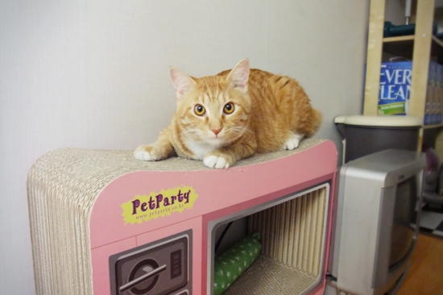
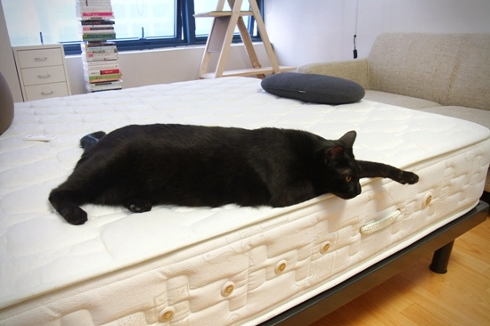
오랜만이군, 잘 지냈나.
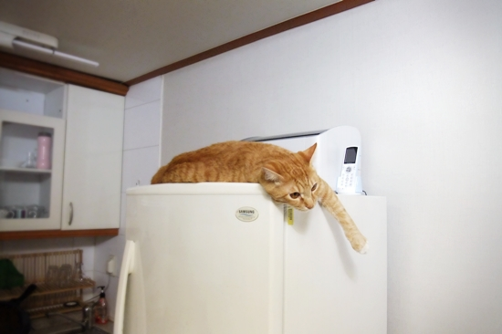
나야, 뭐.
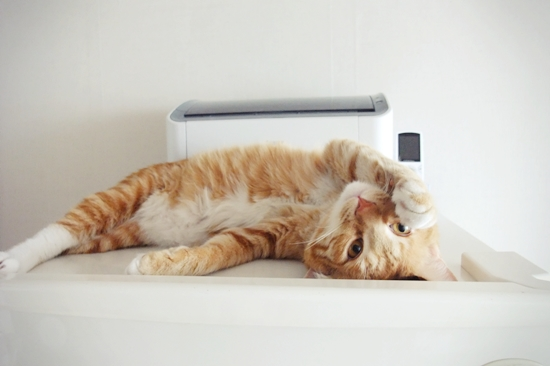
요즘엔 이렇게 냉장고 위에서 좌뒹굴 우뒹굴 하며 지낸다네.
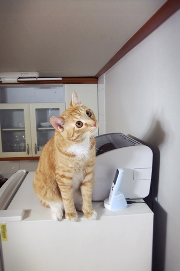
소일거리 삼아 날벌레 구경도 하고 말이지.
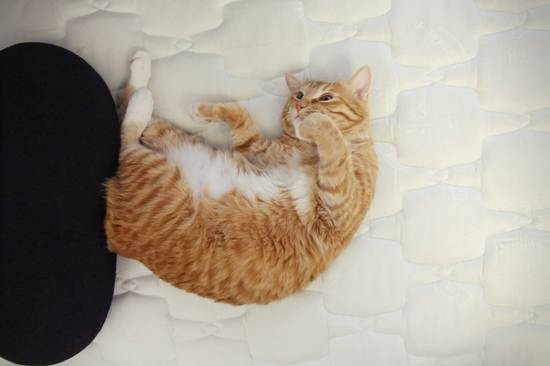
이렇게 귀여움을 떨어도 (우웅-)
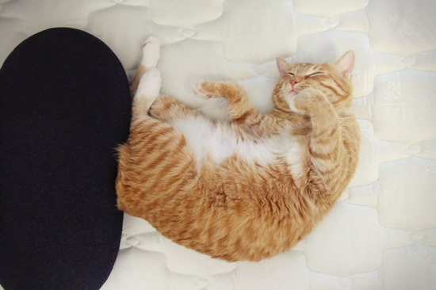
집사 녀석이 바쁘다고 잘 안 놀아주거든.
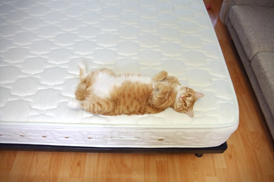
쓸쓸해.
.
.
.
네가 아직 어려서 뭘 모르나 본데,
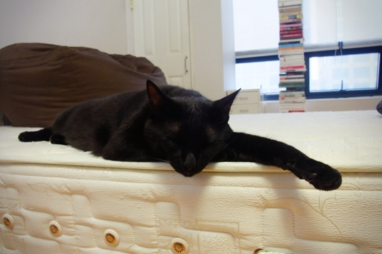
맘 편히 느긋하게 기다려보라구.
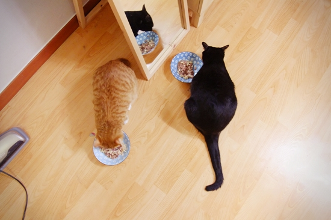
그러면 오히려 집사 녀석이 미안한 맘이 들어 간식으로 우릴 달래려 한단 말이지.
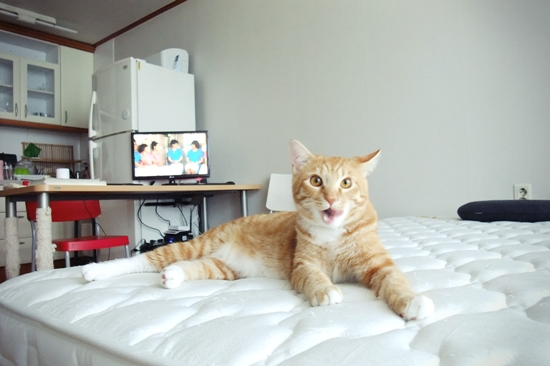
아, 그런 것이옵니까? (쩝쩝-)
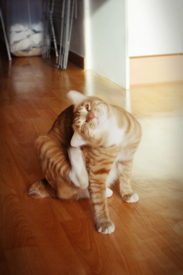
이거 괜한 고민을 했군.